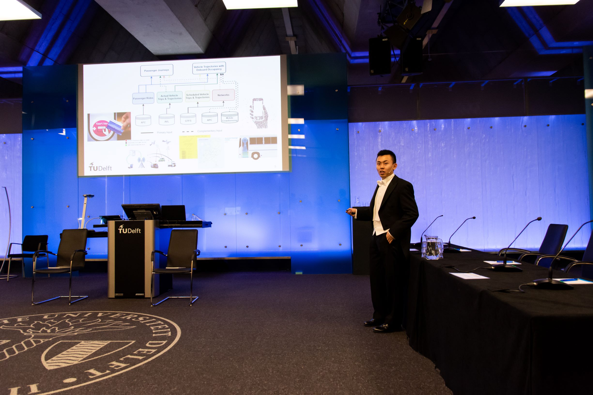
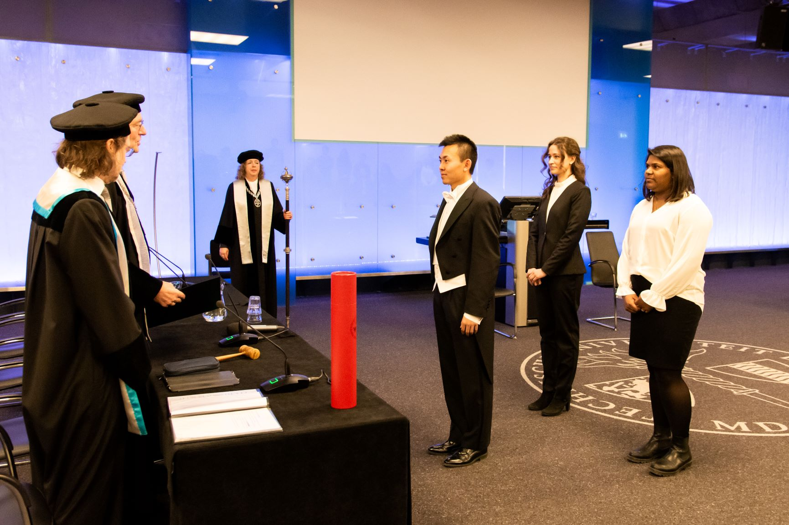
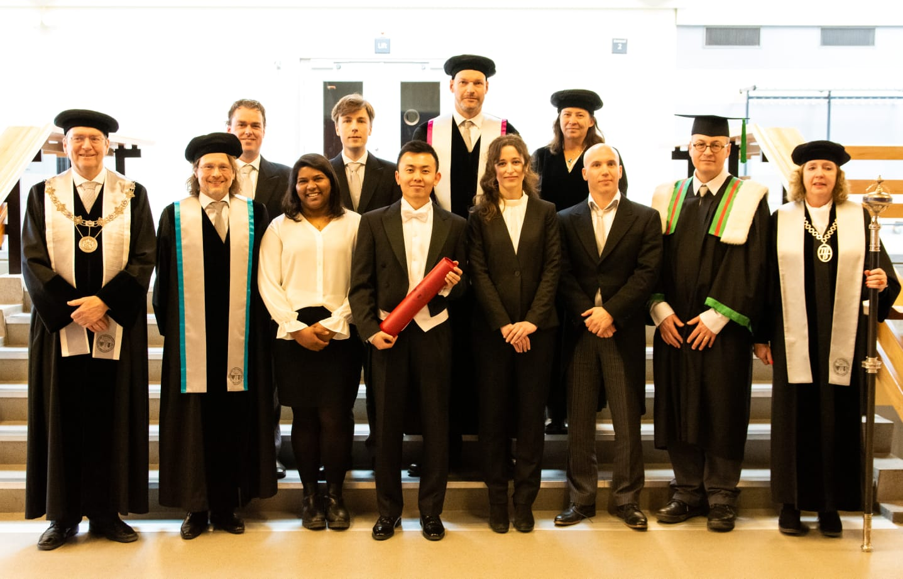
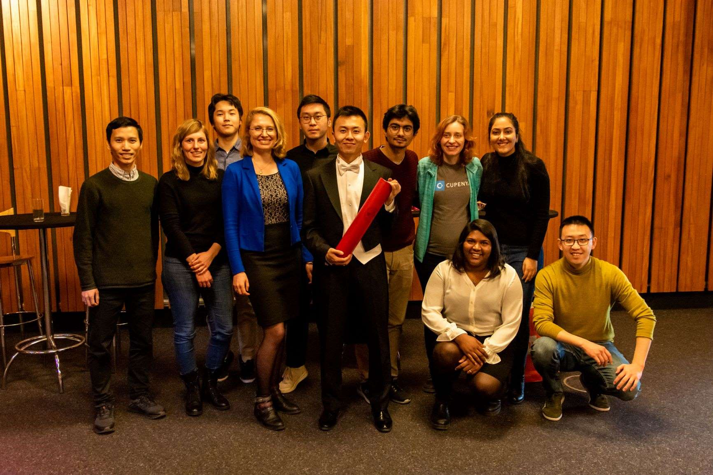
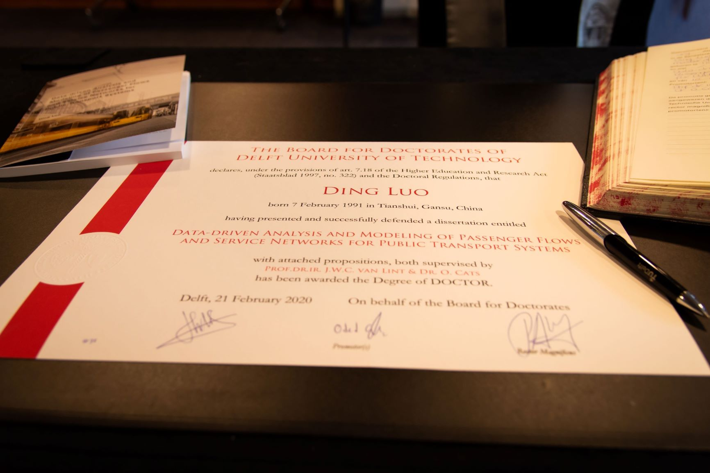

My PhD Project
Entitled “Data-driven Analysis and Modeling of Public Transport Passenger Flows and Service Networks”, my PhD project is a combination of data and public transport.
Research Objective
The overall objective of my PhD project is to develop methods and models for translating high-volume data from a variety of sources into novel knowledge and insights that can be used to improve public transport planning and operations.
These data sources mainly consist of automatic fare collection (AFC), automatic vehicle location (AVL), and general transit feed specification (GTFS) data.
Scientific Contributions
My PhD dissertation is based on a series of published scientific papers with the following specified scientific contributions. Check out my Google Scholar profile (link on the left 👈) for a complete summary of my academic publications.
-
Developed a method for constructing public transport vehicles’ trajectories with onboard occupancy with multiple data sources.
-
Developed a method based on principal component analysis (PCA) for understanding network-wide public transport passenger flows.
-
Developed a method based on the k-means algorithm for clustering public transport stops using additional information of passenger flows.
-
Developing a method for integrating network science and public transport accessibility analysis for comparative assessment.
-
Conducted a pioneering investigation into the relation between passenger flow distribution and network properties in public transport systems.
Societal Relevance
My PhD project helps to unlock the potential of data for improving public transport planning and operations. Therefore, it ultimately contributes to tackling the critical mobility challenges that our society is currently facing with. The research presented in this project offers the following scientific solutions and insights to the public transport industry.
-
Techniques and algorithms for converting multi-source public transport data to crucial information needed for planning and operations.
-
An efficient approach which allows for comparative assessment of public transport accessibility based on scheduled services.
-
An efficient approach for zoning networks based on both spatial and passenger flow patterns.
-
New perspectives for estimating passenger flows and evaluating the performance of public transport systems combining both demand and supply.
Final Defense
The PhD defense at TU Delft is itself a very ceremonial event.
|  | |
|  |  |
|  |  |